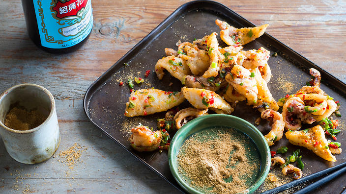

Salt and Pepper Squid

Australia's Favourite Dish - Hongsta's take on this meal is an absolute winner. If there is only one dish you ever make.
It has to be this crunchy calamari sensation.
Salt and Pepper Squid Ingredients
Squid
- Squid, cleaned and cut into triangles
- Pinch of Salt
- Pinch of sugar
- Sesame oil
- 1 Egg white
- Potato starch
- Vegetable oil for frying
Spiced Salt
- 50% Fine sea salt
- 16.3% Sugar
- 16.3% Chicken stock powder
- 16.3% Chinese 5 spice
Dipping Sauce
- Chilli
- Garlic
- Spring onion
- Corriander
- Sugar
- 1/2 lime
- 1.5 tsp fish sauce
Salt and Pepper Squid Recipe
- Marinate squid in equal parts salt, sugar, and sesame oil.
- Add the egg white to the squid. Mix well, so all the pieces of squid are covered in the wet mixture.
- Transfer the squid to a seperate bowl. Leaving the excess egg white behind.
- Add enough potato starch to cover the squid. Mix together. The starch around the squid should be a dry consisteny.
- Lay the squid out on a tray, so that they are not touching.
- Place the tray in the fridge for a minimum of 20 minutes. The longer the better. (starch rehydration).
- While the squid is hydrating, make the Spiced Salt
- To make the dipping sauce add all ingredients together in a bowl. Taste and balance.
- Heat a wok to 180 degrees with vegetable/sunflower oil.
- Add squid to the oil. Dont put too much in at a time. If the squid stick together, do not try and move them apart.
Wait until the squid gets crusty and you will then be able seperate them easily.
- When the squid begin to float, it is a good indication they are ready.
- Transfer cooked squid to a bowl. Sprinkle with a small amount of seasining and toss to mix.
- Plate your delicous S&P Squid and be amazed.